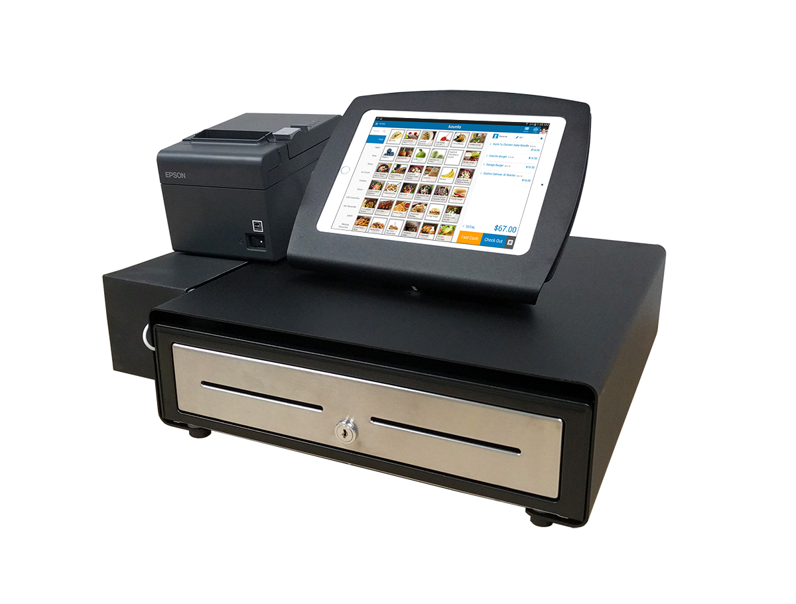
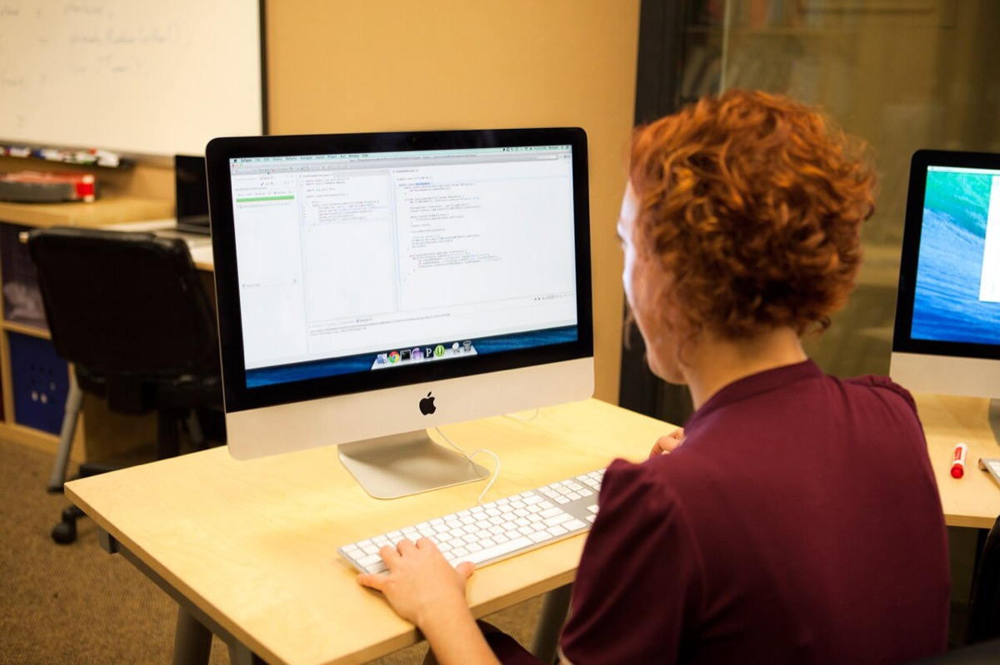

ダイニー
startup-case飲食DX退職勧奨資金調達組織SaaS
主張
読者と判断：ダイニーの2025年削減を「生成AIの必然」か「調達後の採用先行」かで分類する際、公開データでは主因を確定できない。店舗拡大下の最適化という読みも、公式の導入店舗の日付付き純増が無いため採れない。他社比較に使うなら、職種別・入社時期別の削減人数と、削減後の公式店舗時系列を先に取る。
- 主張：本件の主因は生成AIではなく、シリーズB後の採用先行と売上成長のタイムラグである。削減対象の職種構成は、調達時の採用計画で先行した職種に一致する。反証条件：職種別・入社時期別の削減人数とAI業務への割当が公開され、削減が調達後採用組以外かつAI代替可能業務に集中していること。判定：判定不能（一次発表の使途がAI代替でないことと、削減がAI起因であることは両立し得る。CNET単独の職種ラベルでは主因を確定できない）。
- 主張：削減後2四半期で、公式の導入店舗の純増は加速しない。よって「店舗拡大が加速するなかでの最適化」という読みは公式指標で外れる。反証条件：公式サイトまたは会社発表が、削減後の日付付きで導入店舗の純増加速を示すこと。判定：判定不能（公式トップの「導入店舗」欄は再取得時点で3,000店舗と表示されるが、削減前後の四半期時系列が無く純増の加速を判定できない）。
分解：物理的制約（座席注文端末と券売機は店舗単位の設置・設定が残る。サポート工数は店舗数に対して線形に近づきやすい）。お金の流れ（月額と決済手数料。シリーズB 74.6億円の使途はFinance・HR等の新規領域と採用）。利得の帰属（海外VCは効率。経営は生産性指標。従業員は雇用継続。店舗は安定サポート。金額の帰属は未開示）。法と強制力（退職勧奨は合意が前提。整理解雇の四要件とは別）。時間（調達公表から退職勧奨報道まで約9か月）。
①結論Verdict
合意者数・特別退職金・入社時期別内訳・削減後の四半期解約率は一次情報では確定できない（N/A）。公式トップ表示の3,000とCNET取材の1万1,000はdisputedである。二次報道の内部資料金額はヘッドラインに使わない。
②調達から削減までの9か月Nine Months After Series B
株式会社ダイニーは2018年6月20日設立の非上場企業である1,2。飲食店向けのPOSとモバイルオーダーを核に、顧客管理・勤怠・決済を束ねる垂直SaaSを提供する1,2。収益は月額と決済手数料が中心である（定価の公開表はN/A）1,2。


| 時点 | 事実 | 出典 |
|---|---|---|
| 2024年6月 | 社員 約100人 | CNET単独・二次報道（single-source）4 |
| 2024年9月26日 | シリーズB 74.6億円。使途はFinance・HR等の新規領域の開発と採用 | PR TIMES／BRIDGE（会社発表）2,3 |
| 2024年末〜2025年Q1 | 生成AIの進展を理由に採用を停止したと説明 | note／CNET4,5 |
| 2025年6月 | 社員 約200人（約1年で倍増） | CNET単独・二次報道（single-source）4 |
| 2025年6月末 | 代表とCTOが対象者と1対1面談。退職勧奨 30〜40人（約2割）。対象はエンジニアとコーポレート、営業は対象外 | CNET単独・二次報道（single-source）。人数・職種は代表noteでは確認できない4,5 |
| 2025年8月6日 | 代表note公開。同日CNET独占取材 | note／CNET4,5 |
| 2026年2月1日 | 山田真央が代表取締役を辞任。大友一樹が代表取締役社長兼CEOに就任 | 公式NEWS7 |
| ラウンド | 時期 | 調達額 | ポストマネー | 主要投資家 |
|---|---|---|---|---|
| シリーズA | 2021年6月実施／2021年7月公表 | 約3.5億円（累計4.8億円）8 | N/A | グロービス・キャピタル・パートナーズ（リード）、Coral Capital、ANRI8 |
| シリーズB | 2024年9月26日公表 | 74.6億円2,3 | N/A | Bessemer Venture PartnersとHillhouse Investment Management（リード）。Flight Deck CapitalとEclectic Management2,3 |
| 公表ラウンドの単純合算 | 2024年9月時点（ページ内計算） | 約79.4億円（4.8＋74.6）。会社発表の累計値ではない | N/A | — |
調達時点の成長指標として、Forbes JAPANは導入店舗約3,000、2024年ARR見込20.3億円（前年比約3倍）と報じた9。CNET取材では売上は昨対比2倍、店舗は「この1年で2,000から1万1,000」との発言がある（single-source・報道）4。公式トップの「業界をリードする多くの飲食店さまに導入いただいております！」直下の「導入店舗」欄は、再取得時点（2026-11-11）で「3,000店舗」と表示される1。会社発表（2024年12月25日）も約3,000店舗と記す15。静的HTMLの一部取得では当該欄が欠ける場合があるため、ページ本文の当該見出し直下で確認した。削減前後の四半期純増時系列は無く、3,000と1万1,000の差は定義差か時点差か誤記かを一次情報だけでは判別できない（disputed）。
③主因は採用先行か生成AIかHiring Lag vs Generative AI
主張1は因果である。シリーズBの使途が採用であることと、削減時の対外表題が生成AIを前面に置くことは両立し得る。したがって「使途文面と標題の差」だけでは主因を確定できない。


| 検証項目 | 公開事実 | 判定への寄与 |
|---|---|---|
| シリーズBの使途（一次） | Finance・HR等の新規領域のプロダクト開発と、事業拡大を見据えた採用2 | 採用先行仮説と整合。AI起因を否定しない |
| 対外標題・説明（二次／当事者） | CNET標題は「生成AI勃興でリストラ」。代表noteもAI生産性を前面に置く4,5 | AI仮説側の言明。使途の訂正ではない |
| 生産性例示 | 問い合わせの約60%がAIチャットボットで自動応答。Mock・リサーチは3人×1週間→1人×1日（約93%削減）など5 | 業務例示（代表note・single-source）。削減人数の割当証明ではない |
| 削減対象の人数・職種 | 30〜40人。エンジニアとコーポレート。約100人→約200人4 | CNET単独・二次報道。入社時期とAI割当はN/A |
公開されている人数・職種の粒度は次のとおりである。一次の割当表は無く、二次報道のラベルに留まる。
| 項目 | 値 | 出典の種別 | 入社時期 | AI業務への割当 |
|---|---|---|---|---|
| 社員数（2024年6月） | 約100人 | CNET単独・報道 | N/A | N/A |
| 社員数（2025年6月） | 約200人 | CNET単独・報道 | N/A | N/A |
| 退職勧奨の対象 | 30〜40人 | CNET単独・報道 | N/A | N/A |
| 対象職種 | エンジニア・コーポレート（営業は対象外） | CNET単独・報道 | N/A | N/A |
| Wantedly募集（2025年1〜5月） | Webエンジニア／QA／SRE／情シス／経理など（募集終了） | 求人ページ10 | 募集時期のみ | N/A |
用語上、noteの標題は「レイオフ」だが本文で「厳密には退職勧奨」と注記する5。個別手続きの違法性の確定判断は、本レポート作成時点で裁判所の判断としては確認できない（N/A）6。
④公式店舗指標で成長加速読みは採れるかOfficial Store Count and Acceleration
主張2は予測である。削減を「店舗拡大が加速するなかでの最適化」と読むには、削減後2四半期の公式導入店舗が純増で加速したことが必要である。表示の固定だけでは、更新停止と定義差を除外できない。


| 検証項目 | 公開事実 | 判定への寄与 |
|---|---|---|
| 公式トップの「導入店舗」欄 | 「3,000店舗」（再取得 2026-11-11。当該見出し直下で確認）1 | 時点スナップショット。四半期純増の時系列ではない |
| 会社発表 | 約3,000店舗（2024年12月25日）15 | 削減前の会社側表記。削減後の純増証明ではない |
| Forbes報道 | 約3,000（2025年1月）9 | 約3,000側と一致。日付付き純増の時系列ではない |
| CNET取材発言 | この1年で2,000から1万1,000（single-source・報道）4 | 公式トップ表示と不一致。成長加速の公式根拠にはならない |
| 解約率 | 採用・求人資料に0.5%未満12,13。後任代表noteに「低い水準を維持」14 | 日付付きの店舗純増時系列ではない |
レバテック調査の黒字リストラ脅威感（約4割）は日本IT人材の一般傾向であり、ダイニーの公式店舗指標の代替ではない11。主張の検証には使わない。
⑤誰の利得が測れるかMeasurable Stakes
海外VC（BessemerとHillhouse等）の効率性指標は一次情報ではN/Aである。経営側の説明コストもN/Aである。従業員の合意人数と特別退職金、店舗側の解約金額もN/Aである。測定できるのは会社発表の調達使途とCNET単独の人数・職種に限られる。公式トップの「導入店舗」欄と採用資料の解約率表記も測定対象に入る。
⑥残っている問いOpen Questions
- 職種別・入社時期別の削減人数とAI業務への割当はあるか。 主張1の判定に必要。無ければ主因は判定不能のままである。
- 公式が削減後の日付付きで導入店舗の純増（新規・解約の内訳）を示すか。 主張2の判定に必要。トップの時点表示だけでは純増の加速を判定できない。
- 合意者数と特別退職金の金額はあるか。 従業員側の利得測定に必要だが、主張1・2の判定の前提ではない。
⑦出典Sources — 取得・再検証 2026-11-11
- 株式会社ダイニー 公式サイト（会社概要・導入店舗・会員数） https://dinii.jp/
- 株式会社ダイニー「ダイニー、74.6億円のシリーズBラウンド資金調達を実施」PR TIMES、2024年9月26日 https://prtimes.jp/main/html/rd/p/000000070.000043056.html
- BRIDGE「モバイルオーダーPOS『ダイニー』、74.6億円をシリーズB調達——BessemerとHillhouseが日本のスタートアップに初の投資」2024年9月27日 https://thebridge.jp/2024/09/dinii-series-b-round-funding
- CNET Japan「【独占】生成AI勃興でリストラ敢行 巨額調達ダイニーが人材削減に踏み切った理由」2025年8月6日 https://japan.cnet.com/article/35236357/
- 山田真央「レイオフを伝えるという仕事」note、2025年8月6日 https://note.com/maochil/n/n82d307fe2264
- ITmedia ビジネスオンライン「ダイニーの『退職勧奨』は法的にどうなのか？ 弁護士に聞いた」2025年8月9日 https://www.itmedia.co.jp/business/articles/2508/09/news024.html
- 株式会社ダイニー「経営体制の変更について」2026年3月2日 https://dinii.jp/corporate/news/20260302/
- 株式会社ダイニー「モバイルオーダーPOS『ダイニー』累計4.8億円の資金調達」PR TIMES、2021年7月27日 https://prtimes.jp/main/html/rd/p/000000026.000043056.html
- Forbes JAPAN「海外著名VCが飲食DXのダイニーに投資した理由」2025年1月9日 https://forbesjapan.com/articles/detail/76335
- Wantedly 株式会社ダイニーの募集（Web Engineer／QA／SRE／Corporate／Finance 等、2025年1〜5月更新・募集終了）例: https://www.wantedly.com/projects/1732542
- レバテック「IT人材の約4割が黒字リストラに脅威、業務代替の広がりが不安要因に」2026年1月14日 https://levtech.co.jp/research/4874009/
- Suan「74.6億円調達した飲食店オーダー『ダイニー』は何がすごいのか？」採用サイト記載の解約率0.5%未満を引用 https://suan.tokyo/dinii_lll/
- 株式会社ダイニー 採用（HRMOS）オープンポジション（解約率0.5%未満の記載） https://hrmos.co/pages/dinii/jobs/0000
- Kazuki Otomo「ダイニー代表交代から半年の歩み」note、2026年9月7日 https://note.com/dinii_k_otomo/n/n4f45421b119e
- 株式会社ダイニー「ダイニー、2024年の機能アップデートは42回！2つの新サービスも開始」PR TIMES、2024年12月25日（約3,000店舗の記載） https://prtimes.jp/main/html/rd/p/000000081.000043056.html